CMS Restaurant
CMS Resto is a comprehensive restaurant management system that combines a public-facing website with a powerful operator dashboard. It enables restaurant administrators and branch operators to efficiently manage menus, orders, and inventory, while providing customers with a seamless experience to browse offerings and place orders online. Designed as a full-stack solution, it streamlines both customer interaction and back-office operations.
Features
-
Public Website
- Browse menus with detailed categories
- Online ordering system for customers
- Responsive design for desktop and mobile users
-
Operator Dashboard
- Order tracking with real-time status updates
- POS (Point of Sale) system for dine-in and walk-in customers
- Kitchen view for monitoring and preparing incoming orders
- Branch analytics dashboard for sales and performance insights
-
Administrator Dashboard
- Centralized management of multiple branches
- Advanced analytics and reporting tools
- User and role management (Admin, Operators)
- Global control of promotions, content, and branding
Images
Below are sample screenshots of CMS Resto, showcasing the public website, operator dashboard, kitchen view, POS system, and admin management pages. For the complete source code and more details, visit the project repository on GitHub .
 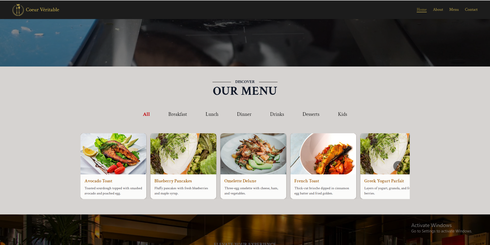
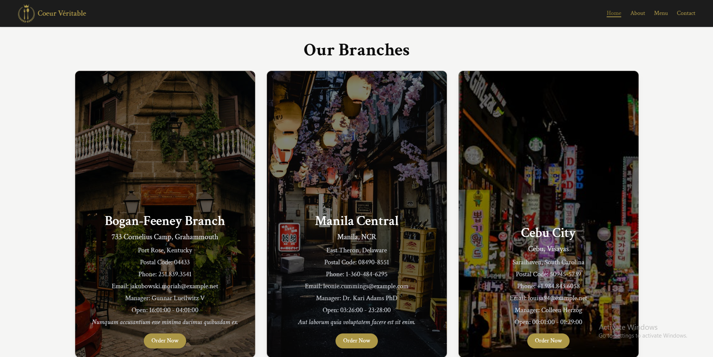
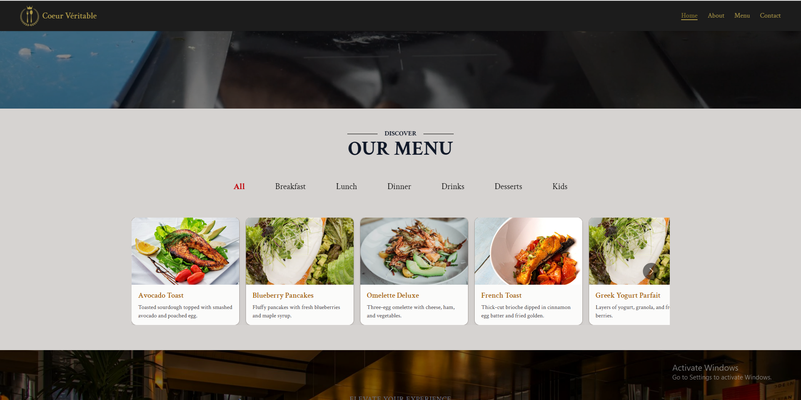
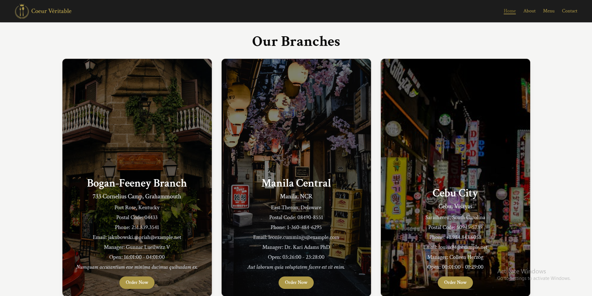
 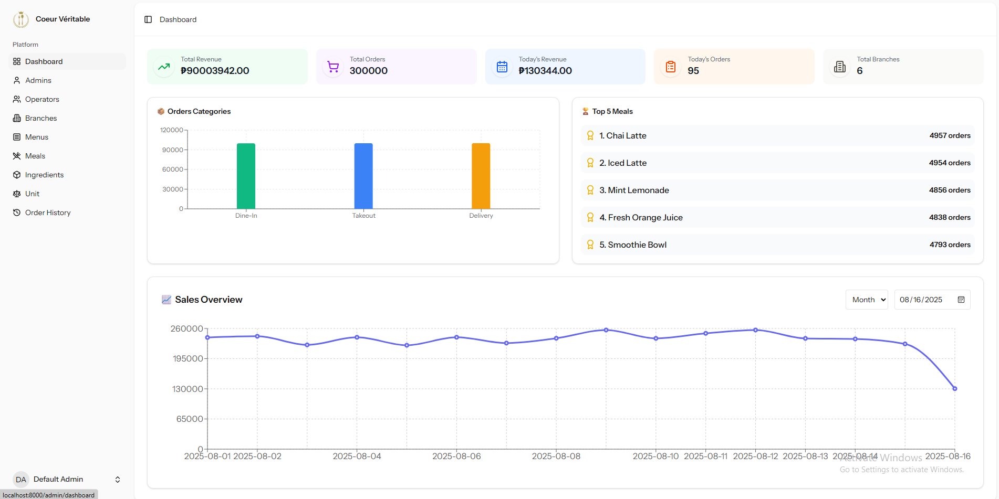
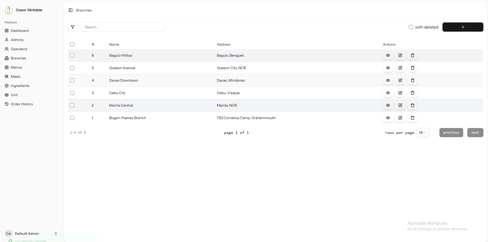
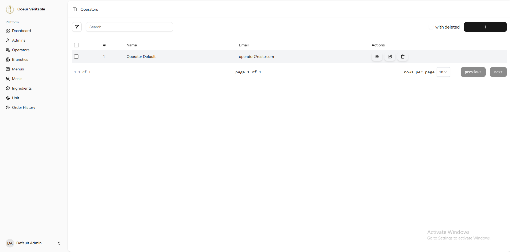
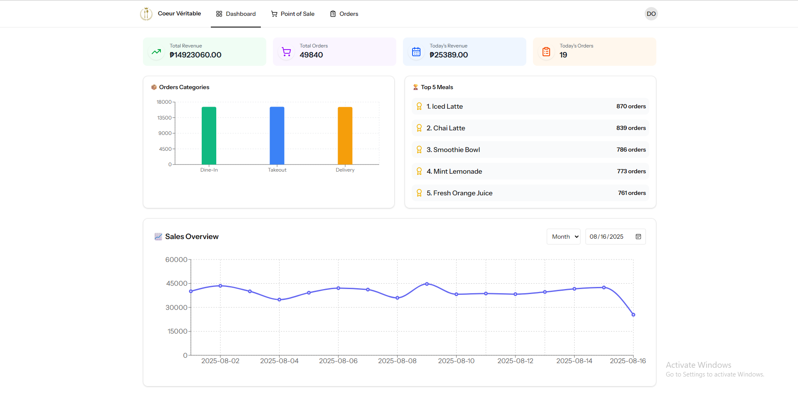
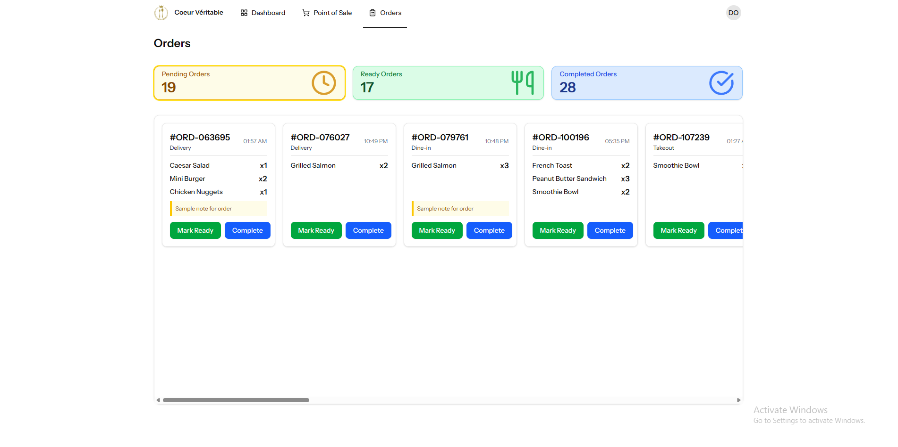
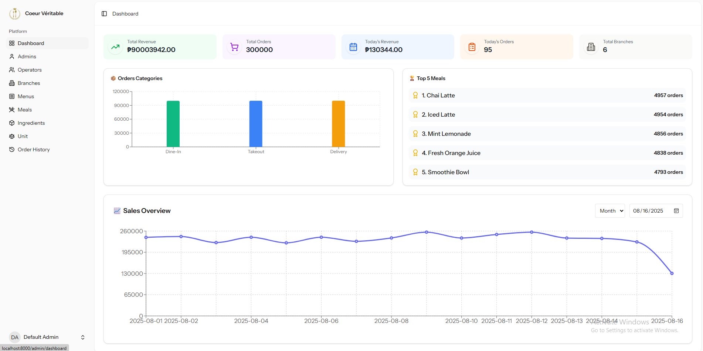
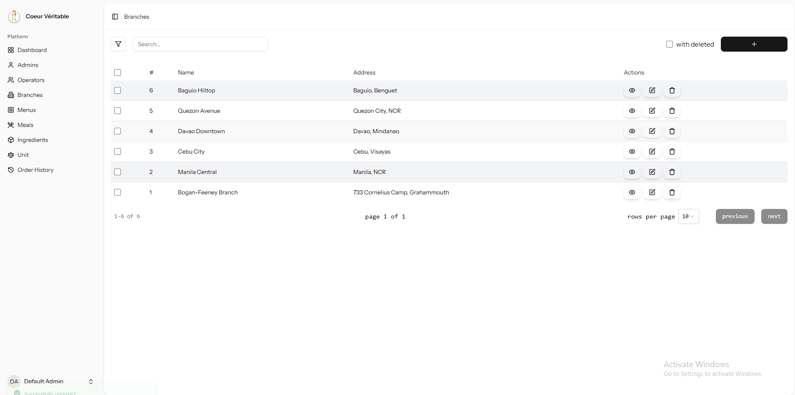
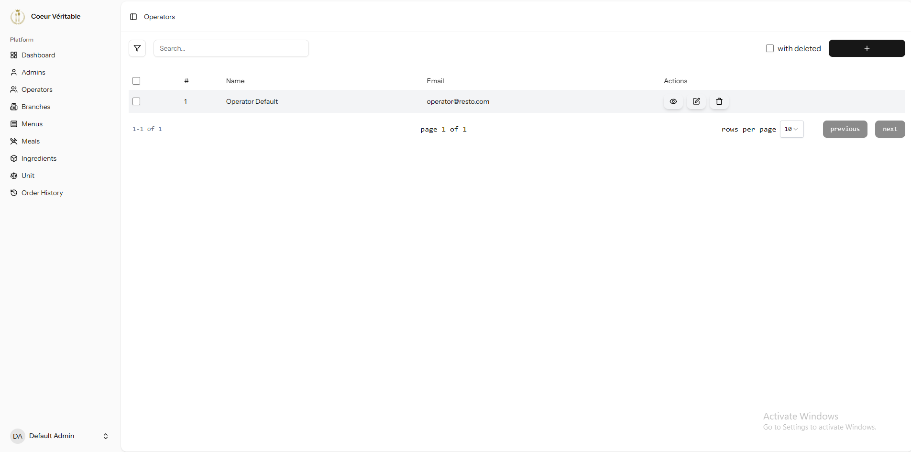
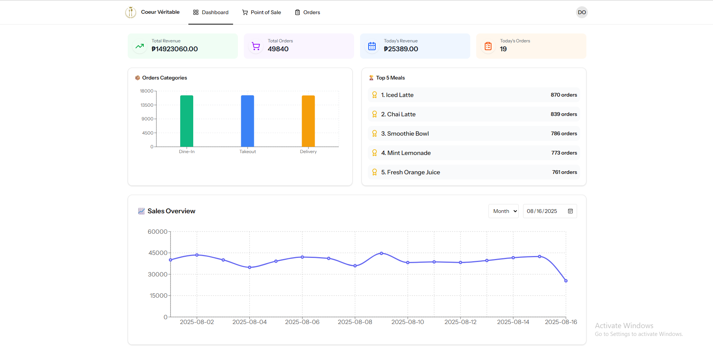
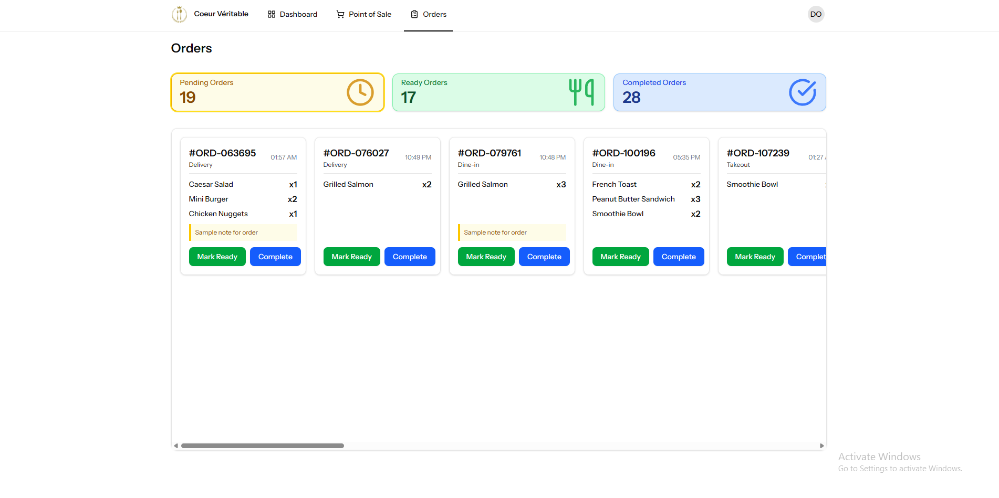